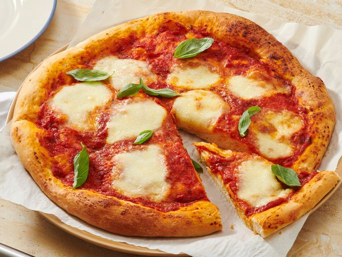

Pizza recipe

Pizza is an Italian dish made of a flat base of leavened dough topped with tomato sauce, cheese (typically mozzarella), and various other ingredients,
baked at high temperatures.
It is often served hot or warm and can be enjoyed in many styles and variations around the world
Ingredients
Dough
- ¼ cup warm water
- 1 teaspoon active dry yeast
- 1 cup cold water
- 1 teaspoon salt
- 3 cups bread flour
- 1 tablespoon extra-virgin olive oil
Topping
- 6 ounces low moisture mozzarella cheese, thinly sliced
- ½ teaspoon dried oregano
- ¼ teaspoon freshly ground black pepper
- ½ cup no salt added canned crushed tomatoes
- 2 tablespoons extra-virgin olive oil
- 6 leaves fresh basil, torn
Steps
- Make and knead the dough
- Divide in half and form into two tight dough balls
- Make the pizzas: Remove dough from the refrigerator one hour prior to using
- Prepare the first pizza: Lightly dust one dough ball with flour and stretch gradually until about 14 inches in diameter
- Lay the toppings over the pizza leaving some space
- Bake in the preheated oven until the crust begins to brown, 4 to 6 minutes
- Slide the pizza onto the peel and remove from the oven
- Follow Steps 1 through 7 to make the second pizza
Homepage